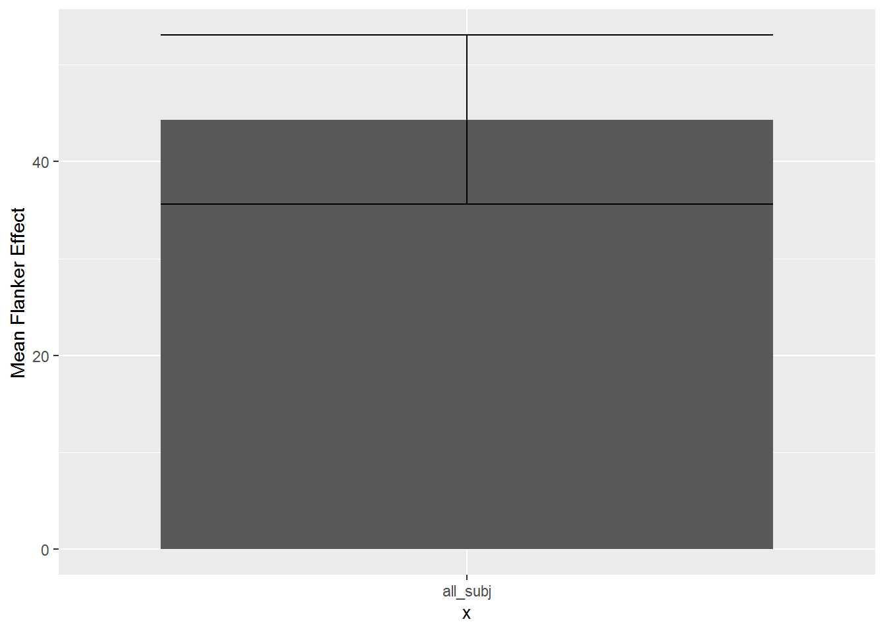

In a flanker task, participants identify a central stimulus (as quickly and accurately) as possible, while ignoring distracting stimuli presented on the left or right of the central stimulus (the flankers).
For example, the stimulus could be “HHH”, and the correct response would be H. This is called a compatible (or congruent) stimulus because the flanking Hs are the same as the central stimulus. Alternatively, the stimulus could be “HSH”, and the correct resposne would be S. This is called an incompatible (or incongruent) stimulus because the flanking Hs are different from the central stimulus.
The data for this assignment come from a flanker task where participants responded to many flanker stimuli over several trials.
library(data.table)
library(dplyr)
library(ggplot2)
# get the file names
file_names <- list.files(path="FlankerData")
# create headers for each column
the_headers <- c("stimulus","congruency","proportion",
"block","condition","dualtask","unknown",
"stimulus_onset","response_time","response","subject")
# Load data
# create empty dataframe
all_data<-data.frame()
# loop to add each file to the dataframe
for(i in file_names){
one_subject <- fread(paste("FlankerData/",i, sep=""),
integer64=getOption("datatable.integer64", "double"))
names(one_subject) <- the_headers
one_subject$subject <- rep(i,dim(one_subject)[1])
one_subject <- cbind(one_subject, trial= 1:dim(one_subject)[1])
all_data <- rbind(all_data,one_subject)
}A correct response occurs when the letter in the response column is the same as the letter in the middle position of item in the stimulus column. Create an accuracy column that codes whether the response was correct or incorrect on each trial (coding can be TRUE/FALSE, 0/1, or some other coding scheme that identifies correct vs incorrect)
corr_answer = c()
for(i in 1:length(all_data$stimulus)){
corr_answer <- c(corr_answer, unlist(strsplit(all_data$stimulus[i], ""))[2])
}
corr_response = c()
for(i in 1:length(all_data$response)){
if(toupper(all_data$response[i]) == corr_answer[i]){
corr_response <- as.integer(c(corr_response, 1))
}
else {corr_response <- c(corr_response,0)}
}
all_data <- cbind(all_data, corr_response)The stimulus_onset column gives a computer timestamp in milliseconds indicating when the stimulus was presented. The response_time column is a timestamp in milliseconds for the response. The difference between the two (response_time - stimulus_onset) is the reaction time in milliseconds. Add a column that calculates the reaction time on each trial.
**tip:** notice that the numbers in response_time and stimulus_onset have the class integer64. Unfortunately, ggplot does not play nice with integers in this format. you will need to make sure your RT column is in the class integer or numeric.
RT <- as.numeric(all_data$response_time - all_data$stimulus_onset)
all_data <- cbind(all_data,RT)Check how many trials each subject completed in the congruent and incongruent conditions, the mean accuracy for each subject in each congruency condition, and the mean RT for each subject in each congruency condition.
num_subjects <- all_data %>%
filter(congruency == 'C' || congruency == 'I') %>%
group_by(subject,congruency) %>%
summarise(counts = length(subject),
mean_RT = mean(RT),
accuracy_RT = sum(corr_response)/length(congruency))
knitr::kable(num_subjects)| subject | congruency | counts | mean_RT | accuracy_RT |
|---|---|---|---|---|
| 1.txt | C | 96 | 550.5312 | 0.9166667 |
| 1.txt | I | 96 | 548.9375 | 0.9270833 |
| 10.txt | C | 96 | 1075.3646 | 0.9479167 |
| 10.txt | I | 96 | 1140.5521 | 0.9166667 |
| 11.txt | C | 96 | 708.2083 | 0.9375000 |
| 11.txt | I | 96 | 852.8958 | 0.9583333 |
| 12.txt | C | 96 | 622.8542 | 0.9270833 |
| 12.txt | I | 96 | 682.3854 | 0.0833333 |
| 13.txt | C | 96 | 545.4375 | 0.8958333 |
| 13.txt | I | 96 | 598.9375 | 0.8229167 |
| 14.txt | C | 96 | 719.7708 | 0.9687500 |
| 14.txt | I | 96 | 742.8333 | 0.9375000 |
| 15.txt | C | 96 | 631.7917 | 0.9895833 |
| 15.txt | I | 96 | 689.6458 | 0.9791667 |
| 16.txt | C | 96 | 572.5104 | 0.9583333 |
| 16.txt | I | 96 | 584.9062 | 0.9687500 |
| 17.txt | C | 96 | 633.2812 | 0.9687500 |
| 17.txt | I | 96 | 620.8958 | 0.9479167 |
| 18.txt | C | 96 | 802.3542 | 1.0000000 |
| 18.txt | I | 96 | 817.5938 | 0.9583333 |
| 19.txt | C | 96 | 1002.3542 | 0.9791667 |
| 19.txt | I | 96 | 1105.2917 | 0.9895833 |
| 2.txt | C | 96 | 1002.9167 | 1.0000000 |
| 2.txt | I | 96 | 1008.2917 | 0.9583333 |
| 20.txt | C | 96 | 669.8542 | 0.9895833 |
| 20.txt | I | 96 | 690.9688 | 1.0000000 |
| 21.txt | C | 96 | 840.6667 | 1.0000000 |
| 21.txt | I | 96 | 904.8646 | 1.0000000 |
| 22.txt | C | 96 | 795.1250 | 0.9687500 |
| 22.txt | I | 96 | 713.2083 | 0.9479167 |
| 3.txt | C | 96 | 812.5104 | 0.9895833 |
| 3.txt | I | 96 | 803.8646 | 0.9687500 |
| 4.txt | C | 96 | 815.3542 | 0.9895833 |
| 4.txt | I | 96 | 901.7500 | 0.9791667 |
| 5.txt | C | 96 | 819.5104 | 0.9791667 |
| 5.txt | I | 96 | 941.4167 | 0.9687500 |
| 6.txt | C | 96 | 667.9583 | 0.9687500 |
| 6.txt | I | 96 | 688.9688 | 0.9687500 |
| 7.txt | C | 96 | 1053.1667 | 0.9895833 |
| 7.txt | I | 96 | 1146.2604 | 1.0000000 |
| 8.txt | C | 96 | 611.8646 | 0.8645833 |
| 8.txt | I | 96 | 632.7604 | 0.9895833 |
| 9.txt | C | 96 | 695.5000 | 0.9687500 |
| 9.txt | I | 96 | 776.3646 | 0.9583333 |
It is common to exclude Reaction times that are very slow. There are many methods and procedures for excluding outlying reaction times. To keep it simple, exclude all RTs that are longer than 2000 ms
exclusions_all_data <- all_data %>%
filter(RT < 2000) RT_analysis <- exclusions_all_data %>%
filter(corr_response == 1) %>%
group_by(subject,congruency) %>%
summarise(corr_RT = mean(RT))
knitr::kable(RT_analysis)| subject | congruency | corr_RT |
|---|---|---|
| 1.txt | C | 556.5341 |
| 1.txt | I | 551.4944 |
| 10.txt | C | 898.2683 |
| 10.txt | I | 986.6410 |
| 11.txt | C | 714.1111 |
| 11.txt | I | 826.5222 |
| 12.txt | C | 612.5843 |
| 12.txt | I | 567.7500 |
| 13.txt | C | 531.9882 |
| 13.txt | I | 635.6962 |
| 14.txt | C | 661.3333 |
| 14.txt | I | 721.6404 |
| 15.txt | C | 631.8632 |
| 15.txt | I | 690.3404 |
| 16.txt | C | 571.3696 |
| 16.txt | I | 582.4624 |
| 17.txt | C | 619.6522 |
| 17.txt | I | 622.4725 |
| 18.txt | C | 802.3542 |
| 18.txt | I | 810.5652 |
| 19.txt | C | 984.2473 |
| 19.txt | I | 1043.4835 |
| 2.txt | C | 919.4239 |
| 2.txt | I | 952.9888 |
| 20.txt | C | 671.8526 |
| 20.txt | I | 690.9688 |
| 21.txt | C | 840.6667 |
| 21.txt | I | 884.1368 |
| 22.txt | C | 747.8152 |
| 22.txt | I | 746.1429 |
| 3.txt | C | 811.7158 |
| 3.txt | I | 809.1505 |
| 4.txt | C | 815.3368 |
| 4.txt | I | 844.4222 |
| 5.txt | C | 784.5543 |
| 5.txt | I | 882.9333 |
| 6.txt | C | 667.9032 |
| 6.txt | I | 691.1398 |
| 7.txt | C | 1024.3298 |
| 7.txt | I | 1076.9032 |
| 8.txt | C | 601.3976 |
| 8.txt | I | 633.9368 |
| 9.txt | C | 695.3763 |
| 9.txt | I | 779.8261 |
overall_analysis <- RT_analysis %>%
group_by(congruency) %>%
summarise(meanRT = mean(corr_RT),
SEM = (sd(corr_RT)/sqrt(length(corr_RT))))
knitr::kable(overall_analysis)| congruency | meanRT | SEM |
|---|---|---|
| C | 734.7581 | 29.77926 |
| I | 774.1644 | 32.58895 |
**tip:** Not all problems have an easy solution in dplyr, this is one them. You may have an easier time using logical indexing of the dataframe to solve this part.
RT_congruency <- RT_analysis %>%
filter(congruency == 'C') %>%
group_by(subject)
RT_incongruency <- RT_analysis %>%
filter(congruency == 'I') %>%
group_by(subject)
flanker_data <- data.table(subj=c(1,10,11,12,13,14,15,16,17,18,19,2,20,21,22,3,4,5,6,7,8,9),
diff_RT = RT_incongruency$corr_RT - RT_congruency$corr_RT)
setorder(flanker_data)
plot(flanker_data)
Multiple questions may often be asked of data, especially questions that may not have been of original interest to the researchers.
In flanker experiments, like this one, it is well known that the flanker effect is modulated by the nature of the previous trial. Specifically, the flanker effect on trial n (the current trial), is larger when the previous trial (trial n-1) involved a congruent item, compared to an incongruent item.
Transform the data to conduct a sequence analysis. The dataframe should already include a factor (column) for the congruency level of trial n. Make another column that codes for the congruency level of trial n-1 (the previous trial). This creates a 2x2 design with trial n congruency x trial n-1 congruency.
First get teh subject means for each condition, then create a table and plot for teh overall means and SEMs in each condition. This should include:
**tip:** be careful, note that the first trial in each experiment can not be included, because it had no preceding trial